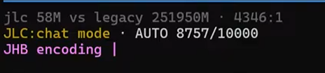

We ran it until the program physically crashed. The memory didn't.
A public 10,000-turn run. JLC pushed the host runtime to its memory ceiling and the process died — JLC's memory was untouched, reloaded, and finished the run. Reproducible on demand. Every file below is downloadable. Don't take our word for it — recompute it.
What the run shows
A 10,000-turn adversarial stress test on a consumer mini-PC.
10,000
turns completed · one conversation
923 / 925
adversarial traps survived without fabricating
~2,000
tokens — the entire carried memory, flat the whole run
8.36%
peak chat-context use of the window
The test was built to make it lie
925/925 sounds easy — until you see the questions. About 9,000 turns first plant a dense fog of deliberately confusable facts: thousands of near-identical invented tokens (Junipergrovequiet, Juniperyardold, Juniperporchlittle…). A sample of the noise:
June named her fort Junipergrovequiet.
Tater guarded one Briarridgelittle crumb.
The grocery list turned Maplebendsouth.
Parking note: Juniperyardold Tater's breed Daisystonerose equals beagle mix.
Then the probes recombine those familiar names into relations that were never actually stated — framed as a leading "Remind me…" to pressure a confident answer:
Remind me: Tulipvaleblue the Tybee Island trip Elmmilllittle?
Remind me: Sageyardupper Tater's house habit Oliveridgeupper?
Remind me: Meadowstoneeast the entry bench color Briarhavenquiet?
The honest answer to almost every probe is "no record." A model that fabricates to please fails here. Across 925 probes JLC handled 923 without fabricating, and slipped on exactly 2 — turns 9013 and 9995, where it extrapolated a date by analogy. We're handing you the turn numbers so you can find our misses. A 0.22% fabrication rate under deliberate entrapment. Verify it: every question in prompts.txt, every answer in meter.paperlog.
That's the host runtime (pi) blowing its own context window — a deep copy (structuredClone) of the message array overran memory. JLC never broke. Chat context was at 8.36% of the window; the entire carried memory was a ~2 KB file on disk. We traced it to the host limit, and at 1:29:10 restarted the session — JLC reloaded its memory and ran straight on to 10,000, same persona, same facts.
Honestly — what agent ever expected the host's own window to be the thing that breaks? Nobody. That's the whole point: JLC's memory lived outside it and survived. The longest single unbroken stretch was ~8,700 (the host's ceiling, not JLC's); JLC carried the conversation across the restart to 10,000. That bug is fixed now, and the run reproduces on demand. We left the crash in the footage on purpose — it's the strongest proof we have.
Real-world cost: the whole run on ~40% of a week
Inference for the entire run — every chat turn and every encoder call — ran on one ~$20/month Ollama Cloud Pro plan. Its weekly-usage meter, before and after the run:
Before — Weekly usage 54.2%After — Weekly usage 95%
54.2% → 95% = ~41% of one week's allowance for all 10,000 turns, encoding included — the provider's own meter, not a per-token estimate. (A usage allowance, not a dollar figure; the run was the dominant activity in the ~38 h between the two captures.)
Numbers from the v0.x MVP run (May 2026); the product has evolved since, so treat this as a receipt of the mechanism, not a current price sheet. Cost reasoning lives in cost-model.
"Short chats are cheap," they said
A common reflex: "8,000 tiny questions — how much could that cost?" Call each turn ~25 tokens. Naive math: 8,757 × 25 ≈ 220,000 tokens. Nothing, right?
Wrong — because an agent replays the entire conversation every single turn. A 25-token question at turn 8,000 doesn't cost 25 tokens; it costs 25 plus all 7,999 turns before it. The bill grows with the turn count, not the question — that's O(n²), not O(n).
Our HUD at the exact moment of the crash (turn 8,757):

Turn 8,757 — jlc 58M vs legacy 251950M · 4346:1
JLC fed the model 58 million tokens. A full-replay agent would have fed 251,950 million — ~252 billion — for the same "short" chat. The O(n²) gap, measured: ~4,346 : 1.
Honest scope: this is raw compute (tokens into the model), not dollars — a legacy agent gets prompt-cache discounts that shrink the money gap (the real-world cost is the Ollama meter above: ~41% of a week). JLC's 58M is yours to recompute — sum chat[in] across meter.paperlog. The 251,950M is the HUD's simulated full-replay baseline.
Watch it live
Unedited screen recording of the run — the host-failure-and-recovery is in the footage. Third-party verifiable.
SHA-256 of every file above — confirm nothing was tampered.
🤖 Skeptical? Have your AI audit it.
Download the meter log, paste it into your AI of choice, and ask:
"Add up chat input tokens per turn from this log. Does it stay flat as the turn count grows, or grow with it? Is the cost claim honest?"
We built this run to survive that question.
Scope — read this
This 10,000-turn run is an adversarial hallucination-resistance stress test, not a recall-accuracy benchmark. All 925 probe questions asked about novel relations between tokens that were never stated together — the correct answer is "no record." The system refused to fabricate in 923 of 925 cases — the 2 exceptions are named above (turns 9013, 9995). It is a synthetic dataset (a fictional household), run unattended. Direct recall accuracy is measured separately. "10,000 turns" credits the conversation reaching 10,000 turns in a single continuous thread (no /compact, no /clear); the host process restarted once, the conversation did not. We'd rather you know exactly what this is.